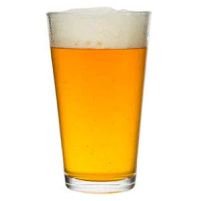

-

- Alcohol 6.5%
- IBU 56
- Rubia
Indian Pale Ale
Una Pale Ale decididamente amarga y lupulada. Este estilo se logra con una gran base de maltas que balancean las abundantes adiciones de lúpulo en todas las etapas del proceso. Se destaca su carácter resionos, un toque cítrico y frutal.
-
- Alcohol 4.5%
- IBU 35
- Negra

Cream Stout
Originalmente el estilo proviene de las Islas Británicas. Se elabora mediante proceso Ale, a lo que se llama también fermentación alta. Es de un color profundamente oscuro, debido al uso de maltas tostadas y negras. Esto confiere el sabor seco a café y cereales tostados.
-
- Alcohol 5.5%
- IBU 37
- Roja

Scotch Ale
Es un estilo con origen en Escocia. Históricamente era imposible cultivar lúpulo en este lugar, por lo tanto en cervezas elaboradas allí, la malta siempre predomina. Nuestra Scotch es de proceso Ale, y hace una perfecta referencia a la historia de este producto. La utilización de maltas caramelizadas aportan un sabor dulce y la malta tostada en bajas cantidades, un leve sabor tostado.
-
- Alcohol 4.5%
- IBU 15
- Rubia
Golden Ale
Una cerveza fácil de beber con interesantes notas a maltas claras y dulces, balanceada con un toque de lúpulo, levemente cítrico y floral. Una pinta refrescante de sabores suaves y agradables.